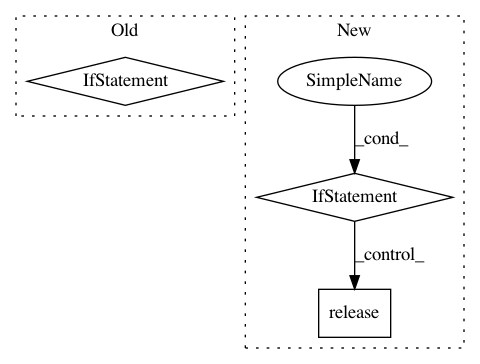

2c9b35fd80328c4c6270ef03149b7ffc17619860,pysos/dag.py,SoS_DAG,find_executable,#SoS_DAG#,148
Before Change
// if no node could be found, let use try pending ones
for node in self.nodes():
// if it has not been executed
if node._status == "pending":
time.sleep(0.5)
return node
//
return None
def node_by_id(self, node_uuid):
for node in self.nodes():
After Change
for node in pending_jobs:
// if it has not been executed
lock = fasteners.InterProcessLock(node._signature[1] + "_")
if lock.acquire(blocking=False):
lock.release()
node._status = None
return node
time.sleep(0.5)
except Exception as e:
env.logger.error(e)
finally:
In pattern: SUPERPATTERN
Frequency: 3
Non-data size: 3
Instances
Project Name: vatlab/SoS
Commit Name: 2c9b35fd80328c4c6270ef03149b7ffc17619860
Time: 2016-10-10
Author: ben.bog@gmail.com
File Name: pysos/dag.py
Class Name: SoS_DAG
Method Name: find_executable
Project Name: pantsbuild/pants
Commit Name: cff740c5b4077bb29e4e687849b2d617a20d62f7
Time: 2014-06-17
Author: benjy@foursquare.com
File Name: src/python/pants/backend/python/tasks/python_run.py
Class Name: PythonRun
Method Name: execute
Project Name: DT42/BerryNet
Commit Name: 23d15da98ec99cf2b848f192c0763b55e1dbfc04
Time: 2020-02-15
Author: bofu@dt42.io
File Name: berrynet/client/camera.py
Class Name:
Method Name: main